The Support Cycle: Liquidity Arriving vs Leaving
We measured the same buy-side wall growing and thinning second by second across six coins, and asked the only question that matters: does it tell you anything about what happens next? It does — about size, not direction.
Full walkthrough — streamed from YouTube.
① Which side carries more of the support cycle
Across the whole archive the two sides sit close together: the ratio between build-up into the buy wall and drain out of the buy wall runs 0.37–0.71× depending on the coin. Neither side structurally dominates the book — which matters, because it means anything we find later is about changes in the support cycle, not about a permanent imbalance between buyers and sellers.
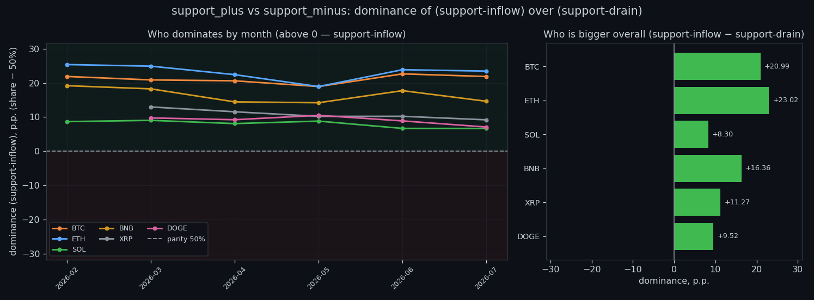
② Does it predict the size of the next move
This is the core question. Rank correlation with the size of the next move is positive on 6 of 6 coins, and strongest at the shortest horizon — +0.39 on BTC at 5s. By the daily scale it fades to +0.07. In plain terms: when the support cycle runs high, the following window tends to be more volatile than usual, and the effect strengthens as the window widens.
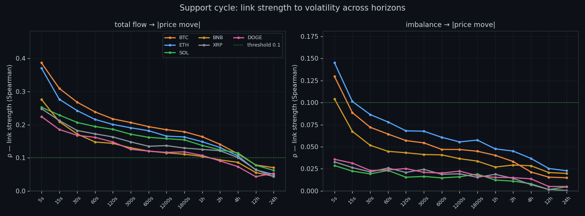
③ How much price actually moves per unit
We measure the price shift per +1σ of the support cycle, split into low, middle and high bands. The effect is small in absolute terms — fractions of a basis point per σ — and asymmetric between the two sides. That asymmetry is worth knowing, but it is nowhere near a tradable directional push on its own.
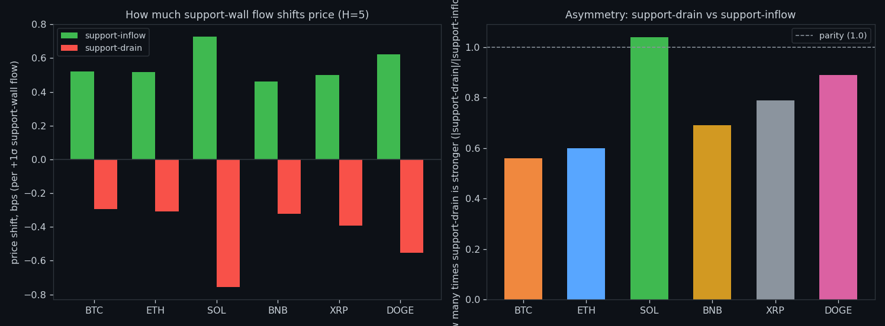
④ What counts as normal, by timeframe
'Normal' has no absolute value here: the support cycle measured per second is a different quantity from the same thing aggregated over an hour or a day, and the scale grows by orders of magnitude (log axis). Every threshold we use later is therefore relative to its own window and its own coin — never a fixed number carried across timeframes.
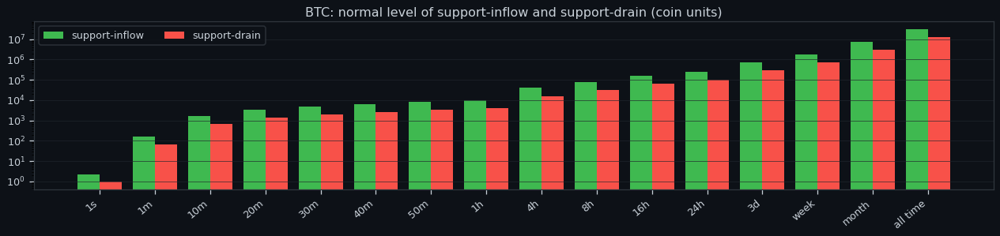
⑤ Where the link peaks
Each coin has a window where the support cycle lines up best with what follows, marked with a star. The peaks cluster at the short end — the information decays quickly, so any use of this signal has to act on the scale of seconds to minutes rather than hours.
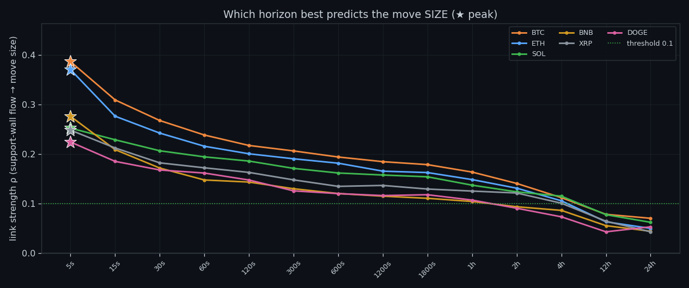
⑥ Does the imbalance predict direction
Barely. Taking the signed difference between build-up into the buy wall and drain out of the buy wall and correlating it with the direction of the next move gives at most ρ≈0.22 anywhere in the grid, and it collapses toward zero on most coins and most horizons. This mirrors what we found with volume: the book tells you how much, not which way.
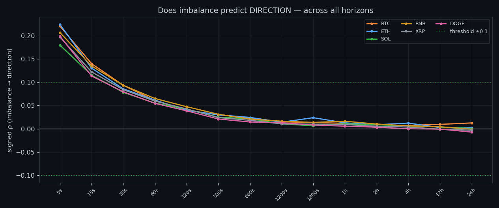
⑦ How long one-sidedness survives
A lopsided book does not stay lopsided. The share of imbalance that persists falls from about 51–63% at one second to roughly 16–45% by the twenty-minute mark. Whatever pushes the support cycle to one side is undone quickly — which is exactly why it cannot steer longer moves.
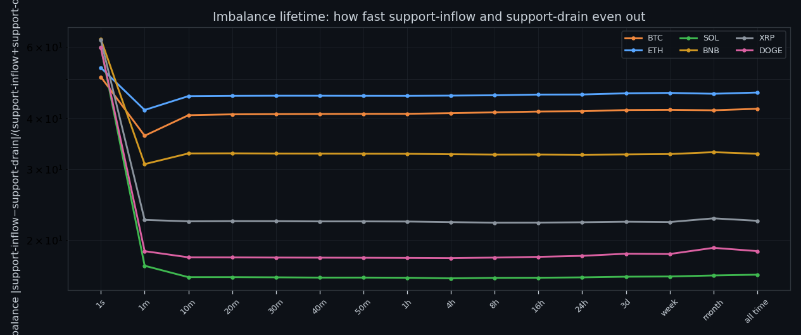
⑧ Memory: does a busy second predict a busy second
Yes, and this is the most robust property in the whole study. Lag-1 autocorrelation of the support cycle is 0.36–0.49 at the fastest scale and 0.29–0.40 at the slowest, on every coin. The quantity is sticky: its own past is a better predictor of its near future than anything about price.

⑨ How extreme the extremes are
Extremes are not mild. A peak second can carry many times the normal level of the support cycle, which is why averages describe this data badly and why we work with quantiles and episodes instead of means.
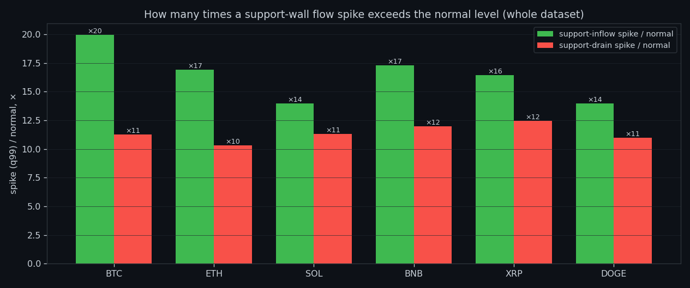
⑩ Where the seconds actually live
Most seconds are unremarkable: the distribution of the support cycle is concentrated in the low bands with a long thin tail. The market spends the overwhelming majority of its time doing nothing interesting, and the tail is where every episode we care about comes from.
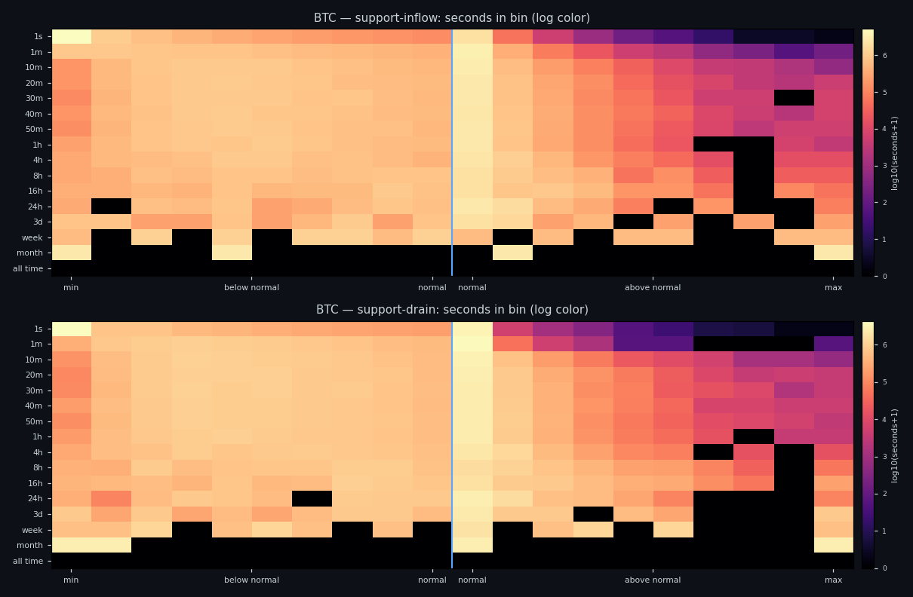
⑪ Spike, normal, lull — what each looks like
We label every moment as spike, normal or lull relative to its own baseline, then look at how price behaves inside each state. The states differ from each other in volatility far more clearly than in direction — the same asymmetry that runs through the whole project.
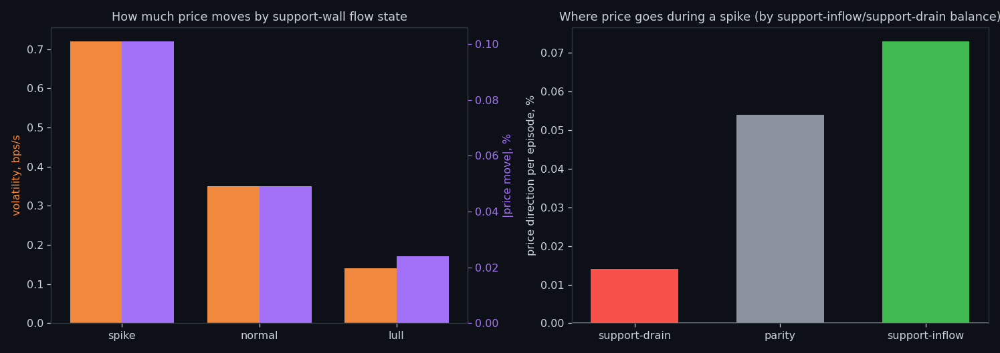
⑫ The same states laid over price
Here the labelling is placed directly on a price window so you can see it rather than trust it: where the support cycle flips state, and what price does around those flips.
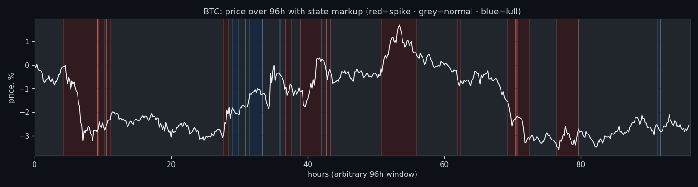
⑬ Extremes arrive in clusters
Spikes in the support cycle are not evenly spaced — they bunch into storms, and a spike inside a cluster is a different animal from an isolated one. Any threshold rule that ignores clustering will fire in bursts and then sit idle for hours.
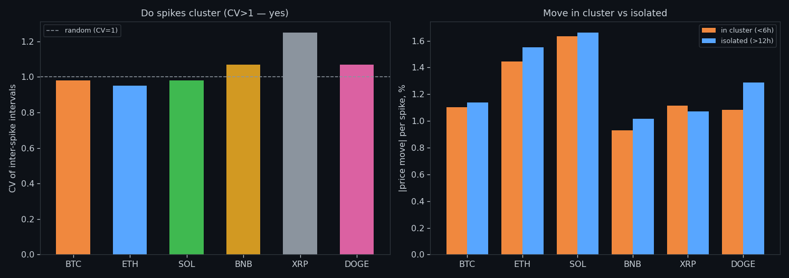
⑭ What it forecasts, honestly
Pulling it together: the two sides of the support cycle move together (coupling reaches 0.90–0.98 at the long end), the quantity forecasts its own future well, and it carries a positive signal about the size of the next move. What it does not carry — on any horizon we measured — is the side. That is the honest boundary of this study.
Research, not financial advice.
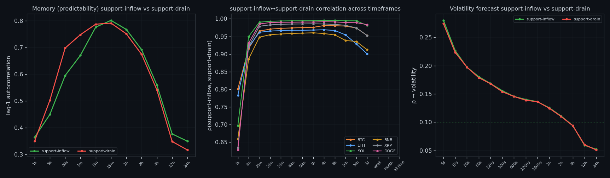
If this changed how you read the tape, the natural next step is Volume Is the Fuel — Not the Steering Wheel — We recorded the Binance order book every second for six coins over five months and ran eighteen tests on what volume really does.
Volume Is the Fuel — Not the Steering Wheel
We recorded the Binance order book every second for six coins over five months and ran eighteen tests on what volume really does.
About Market Research Lab — What We Collect and Why
Most market commentary is storytelling.
From Calm to Calm: a Standard for What Counts as a Signal (BTC)
We stopped defining market signals with a stopwatch.
The Wall That Goes Quiet: What Resting Liquidity Predicts
We measured resting limit liquidity sitting on both sides of the book second by second across six coins, and asked the only question that matters:….
Comments
Discussion is powered by GitHub. Enable it by adding secrets/giscus.json (repo IDs from giscus.app).